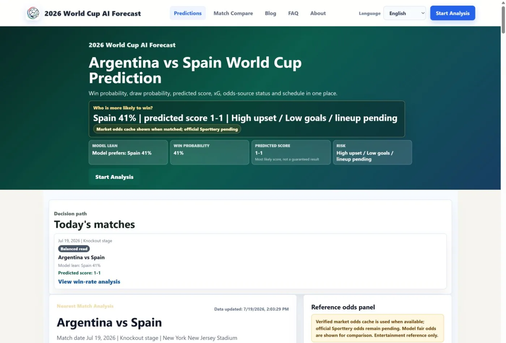

01 / AI × 赛事数据独立开发 · 已上线
World Cup AI Forecast
赛程、球队对比与预测复盘。
访问产品（新窗口）：AI × MATCH DATA01

真实界面 · 截图于 查看实屏大图
围绕世界杯赛程、球队对比与模型概率，将分散的赛事信息整理成可以浏览、分析和复盘的 AI 数据产品。
查看产品路径与职责收起产品路径与职责
- 体验路径
- 查看赛事信息 → 比赛对比 → 赛后复盘，回看并解释预测结果。
- 我的职责
- 独立完成产品开发与上线。